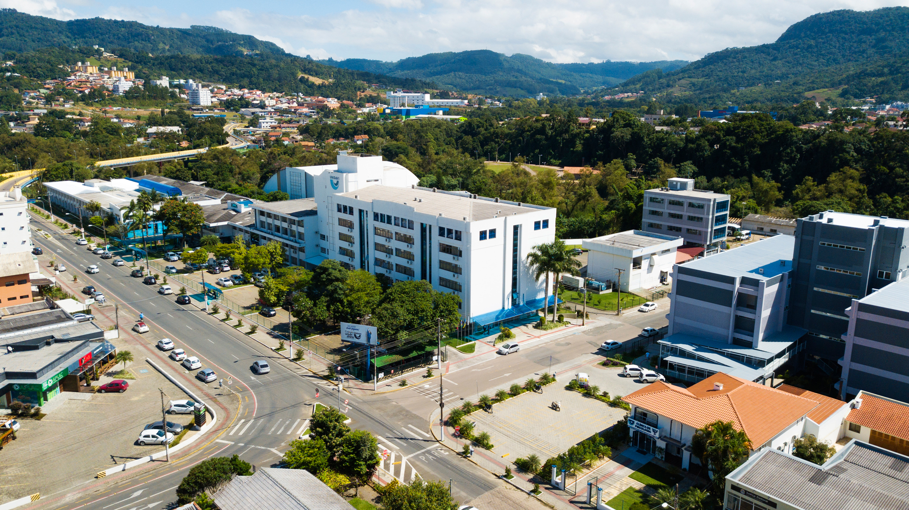
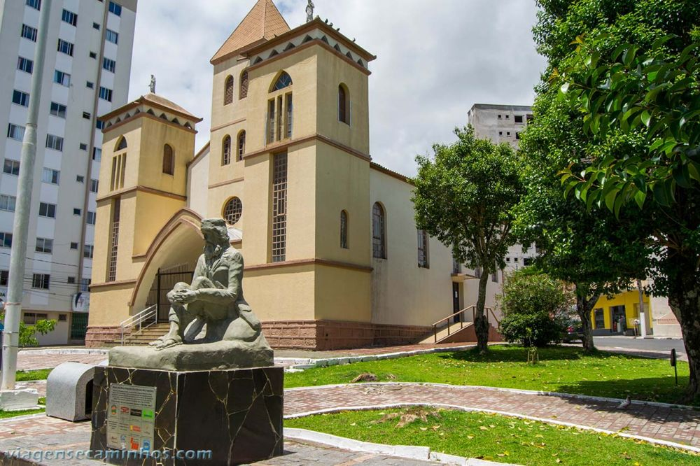
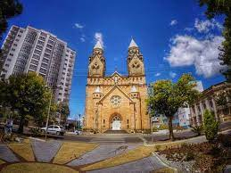
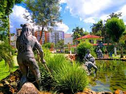

Bem-vindo a Lages
 Universidade para o Desenvolvimento do Alto Vale do Itajai - UNIDAVI
Turismo
Igreja da Santa Cruz
Foi construída onde tropeiros e viajantes se reuniam e, faziam ao redor do fogo de chão no acampamento, suas reuniões, laser, descanso, troca de informações, causos, prosas e as vezes um dedilhar de viola e violão ou gaita de ponto. Na oportunidade a rapaziada da Vila iam até o local da pastagem e roubavam dos animais madrinheiros os cincerros e/ou colocavam palhas de milho dentro dos mesmos, esta era uma forma de brincadeira para com os tropeiros e que o lageano ganhou na alcunha de ladrão de cincerro.
Praça João Ribeiro
Localizada em frente a Catedral, no inicio do século XX passa por melhorias estéticas e foi por anos palco de diferentes homenagens públicas. Entre as décadas 1940 e 1970 foram inaugurados bustos: César Sartori, D. Daniel Hostin - primeiro Bispo Diocesano, Manoel Thiago de Castro, Getúlio Vargas e Walmor Ribeiro. Na década de 1990 o busto de Manoel Thiago de Castro foi retirado da Praça e passou a compor o acervo do Museu Histórico Thiago de Castro.
⠀⠀⠀⠀⠀⠀⠀⠀⠀⠀⠀⠀⠀⠀⠀⠀⠀⠀⠀⠀⠀⠀⠀⠀⠀⠀⠀⠀
Parque Jonas Ramos Tanque
Popularmente chamado de Tanque. Correia Pinto, fundador da cidade, por volta de 1771, teria mandado construir um tanque aproveitando quatro ou cinco fontes naturais que ali as mulheres pudessem lavar suas roupas sem serem molestadas por índios e animais selvagens. O local foi homenageado com o Monumento às Lavadeiras.